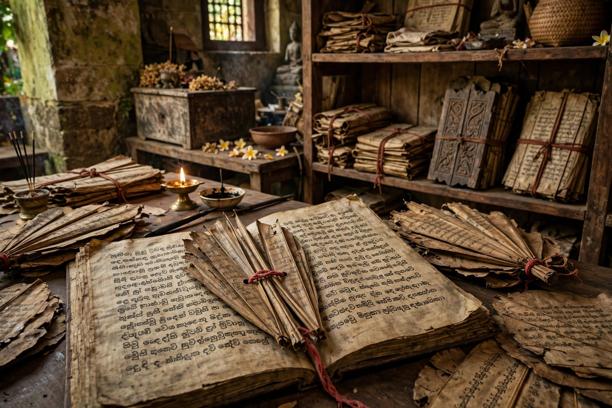

| Mahavamsa | |
|---|---|
 A palm-leaf manuscript of the Mahavamsa | |
| Author | Attributed to the monk Mahanama |
| Date | 5th–6th century CE |
| Language | Pali |
| Subject | History of Sri Lanka and its kings, from Vijaya to Mahasena |
| Preceded by | Dipavamsa |
| Continued in | Culavamsa |
The Mahavamsa ("Great Chronicle") is an epic poem in Pali recounting the history of Sri Lanka from its legendary beginnings to the reign of King Mahasena (ending in the early 4th century CE). Compiled by the Buddhist monk Mahanama in the 5th or 6th century CE, drawing on the earlier Dipavamsa and monastic commentaries, it is one of the world's longest unbroken historical chronicles and a foundational text of Sinhalese Buddhist civilisation.
The Mahavamsa opens with the Buddha's three legendary visits to Lanka, then tells of the arrival of Prince Vijaya — synchronised with the day of the Buddha's death — and the early kings of Anuradhapura. Its central sacred history begins with the mission of Mahinda (Mahendra), son of the Indian emperor Ashoka, who brought Theravada Buddhism to the island in the 3rd century BCE, the planting of the Bodhi tree sapling by his sister Sanghamitta, and the enshrinement of relics in great stupas.
Its most famous heroic figure is King Dutthagamani (2nd century BCE), whose defeat of the Tamil ruler Elara is narrated at length and has become a touchstone — celebrated and contested — in modern ethnic politics. The chronicle closes with King Mahasena; the story was continued in the Culavamsa ("Lesser Chronicle") by later authors down to the 19th century.
Although written a millennium after the earliest events it describes and woven with miracles and legend, the Mahavamsa preserves a remarkably consistent king-list. Nineteenth-century scholars such as George Turnour, who first translated it, used it to anchor South Asian chronology, and many of its synchronisms — notably with Ashoka — and numerous kings and monuments have been corroborated by inscriptions and archaeology. Historians therefore treat its later portions as broadly reliable, while reading the Vijaya cycle as myth.
The Mahavamsa framed Sri Lanka as the island chosen to preserve Buddhism in its pure form — a self-understanding that shaped Sinhalese kingship and monastic institutions and still resonates in the island's politics. Critical editions and translations by Wilhelm Geiger made it accessible to modern scholarship in the early 20th century. Its narrative remains canonical in Sri Lankan schools and in Theravada countries beyond the island.